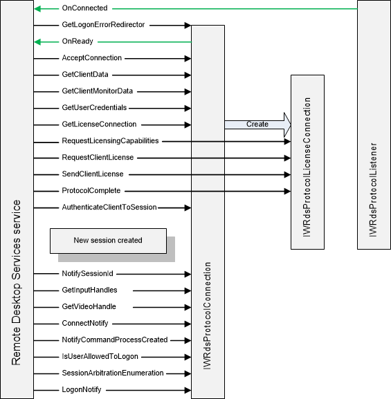

title: Connection Sequence
description: An illustration that shows the method calls made between the Remote Desktop Services service and your protocol during the client connection sequence.
ms.assetid: 60e56093-c457-43bc-b152-15c5acbfb016
ms.tgt_platform: multiple
ms.topic: article
ms.date: 05/31/2018
Connection Sequence
The following illustration shows the method calls made between the Remote Desktop Services service and your protocol during the client connection sequence. The actions shown here follow the Start Sequence. The interaction between the service and the IWRdsProtocolLicenseConnection object represents the licensing handshake for the client.

Related topics
Method Call Sequence
Reconnect Sequence
Start Sequence
Â
Â